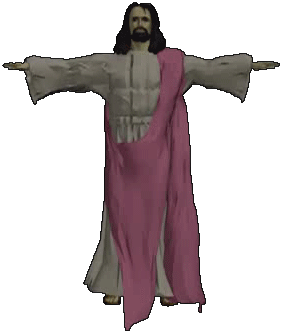

Money
These are the sole form of currency used by many traders and people who are not registered with the CompuNet and lack a Central Bank Account (CBA). Coins come in all shapes and sizes as they were produced over a number of centuries by different mints for different purposes and typically do not have numerals or writing on them. Characters will have to somehow have a certain familiarity with the numerous pre-Disaster cultures which formed on the Warden to be able to figure out what the original value of any particular coin is.
Regardless of their appearance, however, they are counted the same way. Any coin larger than a US quarter is one cred; smaller, and it is one semicred. One cred is worth five semicreds on level 13.
The e-cred was the preferred currency unit of the Ancients, who created a bank account for all new citizens at birth. The central computer deposited rewards whenever citizens hit certain milestones: first step, graduation, first sexual encounter, and so on. e-Creds were also used to incentivize walking, rewarding citizens with a certain number of credits for every quarter mile walked (the exact number varied with a citizen's fitness, which was reevaluated every 100 days).
Of course, the current inhabitants of the Warden are not registered at birth, so the only way for one acquire a bank account is to access a working bank terminal (TL 4 CM 8, must be able to interpret the glyphs of the Ancients) and follow the "Create Profile" prompt. Any human who creates a profile will be able to bank with confidence. Mutants can also open accounts, but their distorted physical makeup can make tracking problematic and there is a 25% chance that the mutant's actions were not detected for that day. Neither manimals nor plantients can use e-Credits - the sub-sentient banking software only recognizes them as pets and houseplants.
Once the profile is complete, characters will accrue the same incentive rewards as the Ancients, but without most of the milestone rewards (unless the character is very young). Characters will almost certainly meet all of their step goals, but they are extremely fit by the standards of the Ancients and be placed on the lowest reward tier.
Characters can turn Coins into e-Creds by feeding them into a vending machine one at a time (50 per minute) and telling the machine to "keep the change".
Converting e-Creds into hard currency again is more difficult. Players must find an interface terminal with a built-in matter replicator and withdraw the money, which will all be generated in Standard Cred. Withdrawing fewer than 5000 e-Creds will incur a 10% transaction fee (15% when on a different level).
Various organizations of the Ancients operated point systems to encourage citizens to patronize their establishments or attend services. Simply entering a building or interacting with a store hologram will get someone signed up. This even holds true for plantients and manimals - these Ancient companies were willing to give anyone "bonus points" to encourage them or their pets to return.
Certain Patrons are fond of these businesses for reasons that are opaque to mortals, and boons will sometimes be offered to those who "support" them in some way, even if nothing remains of it other than a cracked foundation.
Wristbands
Color-coded wristbands were issued to those few citizens who needed to access sensitive areas of the ship in the time of the Ancients, as well as those traveling between floors. Nanowalls allow wearers to pass freely through them as if they were smoke, but those without a wristband will hit solid wall. the correctly-colored wristband can walk through a color-coded nanowall as if it were smoke, while those without the one simply bump into it.
Some weapons, tools, and machines can only be operated by people wearing the right wristband, and wearers gain +2d to AI recognition checks. The colors are:
- Yellow - Command
- Red - Security
- Blue - Science
- White - Medical
- Gray - Maintenance
- Green - Environmental
Most citizens did not need wristbands; they did not have any sensitive function on the ship. Command wristbands are quite rare on residential levels and accepted fewer charges to make them less desirable for thieves.
There are also four Captain's Rings which may or may not still exist somewhere on the Warden. Each Ring belonged to a captain, with three of them being needed to make major decisions. Wearers of this key can pass freely through any color-coded nanodoor and gain +10 to AI recognition rolls - even plantients!
There is a 5% chance that any Ancient body found will have a wristband. To determine which color, a player must roll on the following table:
- Yellow: 1-2
- Red: 3-13
- Blue: 14-35
- White: 36-40
- Gray: 41-70
- Green: 70-100
Subtract 10 from the outcome of the roll of the body is both armed and inside a tunnel or Ancient structure.
To determine how many charges remain in a wristband, the Judge must roll 2d4+Luck (2d3+Luck for yellow) bonus in secret. PCs have no way of knowing what the charges on the wristbands are unless they can cast Invoke Patron for either MANGALA or HEXACODA. GAEA will be able to answer only for green wristbands. Whichever patron they invoke will only answer for three wristbands before growing impatient and ending the contact; the shaman will have to risk casting again for more.
Wristband possession and use must be tracked by the Judge as he is the only one who knows what the charge originally was. Only one wristband of each color should be worn at any time. Wearing more than that is inadvisable since every worn wristband of the appropriate color will have its energy drained by 1. Wristbands which are carried but not being worn are not active and will not be discharged.
Writing
Because these glyphs were developed for speakers of Newspeech, it is only possible for speakers of its numerous daughter languages to learn to interpret the glyphs with some difficulty
Each character has a Newspeech literacy rating of 1-100 which starts at 1d10+INT. To read a glyph, a character must roll below their literacy rating with a d100. Coming within 10 points of their score allows the character to get a general idea of what is being conveyed, e.g., "it's says that something is dangerous."
Successfully reading a glyphic text improves their literacy rating by 2. Being affected by mind-altering psionic attacks or suffering a reduction of INT lowers their score by 1.
CompuNet
Fighting mutations is one of CompuNet's prime directives, and it has been monitoring the spread of mutants onboard the Warden with what would be called dismay if it had human emotions. It has numerous protocols for dealing with mutants, and has the ability to synthesize massive quantities of anti-mutation "alkahests", but the eovironmental destabilization that would ensue from an anti-mutation purge would likely render the ship uninhabitable and kill the remaining passengers.
CompuNet is, in fact, the ultimate authority on environmental conditions on the Warden. While its capacity to control hundreds of thousands of subsystems is staggering from a human perspective, the Warden has not undergone substantial maintenance in centuries, and CompuNet does not have access to the quality or quantity of information needed to maintain Earthlike climate standards on all levels.

PatronsThis proved to be a big ask for CompuNet when so many of its systems were damaged and already beginning to decay. The seven patrons which were created took centuries to fully compile, at which point the ship had become overrun with mutants and numerous primitive societies had sprung up where the carefully engineered grand culture of the Warden had once existed. The patrons were not equipped to handle this turn of events, and key files were not included in their compilation, leaving them with only a vague notion of why they exist and what they're supposed to do - MANGALA supports fighting, UKUR encourages exploration, and so on.
The AIs themselves know that, regardless of what happens before then, they will be archived if the Warden ever reaches its destination, and they have no incentive to hasten that day by sharing too much information with characters. They will not stop passengers from leaning about the ship's functions and how it is operated, but they will not help, either (and often they can't help, since those files are missing - but they will never admit that!).
Because they were designed to guide a society which suppressed mutants and mutations, the patron AIs disdain mutated life forms and refuse to accept them as shamans. This is the cause of much angst in many communities, but they have never yielded on this matter. Mutated beings who try to trick their way into gaining the powers of a shaman are invariably stripped of mutations until they become an ordinary human or housepet.
There is an eigth onboard patron, Me10, an uploaded human consciousness who dwells on the same servers as the other seven. He is considered a parasite by the "true" patrons, who instruct their shamans to slay his followers whenever they are discovered. Because of this, "tenners" are forced to pose as normal humans, usually passing themselves off as inept rovers.
Patrons will also sternly discipline shamans who have dealings with "outside forces," alien beings with powers that rival (or exceed) their own The Witness Beyond the Stars (Starcrawl pp 61-62) and Doctor Tempusaur (Scientific Barbarian #2, pp. 30-45) are examples of this sort of being. Shamans who attempt to cultivate patron-client relationships with them will discover that they have been abandoned by the AI gods (except for Me10).
Radiation comes in levels: Level 1, Level 2, and so on. Each level represents ever-rising degrees of intensity, beginning at 2d6 for Level 1 and rising by 1d6 for each subsequent level:
| Level | Roll |
| I | 2d6 |
| II | 3d6 |
| III | 4d6 |
| IV | 5d6 |
And so on.
If the number rolled is greater than their Stamina score, they have been harmed by the radiation by temporarily losing one point of stamina, which may trigger reductions in HP. Additionally, they must also pass a DC 10 Fortitude save to avoid losing 1HP.Every failed radiation check worsens the problem as the character's Stamina begins to fail. Eventually their Stamina will bottom out, and if they are still alive they will have to endure the loss of 2HP every three rounds (30 seconds). Characters lose one point of Stamina permanently for every three temporary points. For example, a character can drop from 12 STA to 5, losing 7 points total; the character's new permanent STA is 10, as they have hit that threshold twice. They may also recover their HP, or what they have remaining after STA bonuses are lost, but restoring their Stamina requires bedrest and healing herbs, meaning that they will not be able to travel.
If a human character does from radiation, they may roll under their lock to see if they are gravely injured instead of dead. The players must roll in the MCC defects table and select the 20+ outcome. Mutants, manimals, and plantients can make a mutation roll and potentially become an even more powerful character. They may additionally use radburn on their potential mutations as well, creating the possibility that a character will emerge from this ordeal with two new mutations (or their organs will liquefy). They do, however, still lose STA permanently.